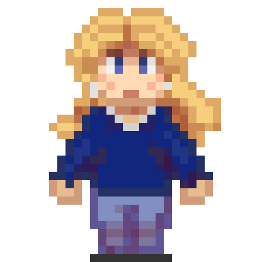

I'm 22 years old and I'm originally from Flevoland. Ever since I was young I was intrested in biology and animals. I was a very curious child and excelled in the STEM subjects all throughout high school. When I was 15 I started looking arround for a study. For me the choise was between biology, or a creative study. I wanted to help people behind the screens.
On an open day I fell in love with labratory work, it perfectely matched what I wanted: I could help people, and feed my curiosity. Especially everything to do with DNA and pathways intrigued me. In 2020 I started my study at van Hall Larenstein and living on my own.
In my free time I practice one of my many hobbies. I'm a very creative person and spend the most of my free time creating. I do this painting, drawing or crocheting. But I have a deep rooted love for every creative output and love putting my passion for science in my work. Beside creative hobbies I like learning how to code, that is how this site came into life. The rest of my free time is spend on reading fantasy books or hanging out with friends and family. When possible I spend my time outside, hanging out in nature gives me energy and new ideas.